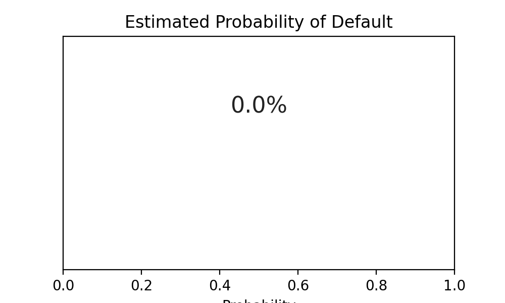

Overview
This project models and simulates credit risk using Python, including estimation of default probabilities and credit exposure analysis.
Mathematical Explanation: Logistic Regression for Default Probability
Logistic regression is a statistical method used to estimate the probability that a binary event occurs (e.g., default or no default).
The model predicts the probability \( p \) of default as:
where \( x_1, x_2, ... \) are features (e.g., income, loan amount), and \( \beta_0, \beta_1, ... \) are coefficients learned from data.
The output is a probability between 0 and 1, interpreted as the likelihood of default.

Sample Python Code: Default Probability Estimation (Logistic Regression)
This example uses synthetic data to estimate the probability of default using logistic regression, a common approach in credit risk modeling.
import numpy as np
from sklearn.linear_model import LogisticRegression
# Synthetic data: [income, loan_amount], 1 = default, 0 = no default
X = np.array([
[50000, 10000],
[60000, 15000],
[35000, 8000],
[80000, 20000],
[120000, 30000],
[40000, 12000],
[70000, 10000],
[30000, 5000],
[90000, 25000],
[100000, 40000]
])
y = np.array([0, 0, 1, 0, 0, 1, 0, 1, 0, 0])
# Fit logistic regression model
model = LogisticRegression()
model.fit(X, y)
# Predict probability of default for a new applicant
new_applicant = np.array([[45000, 11000]])
def_prob = model.predict_proba(new_applicant)[0, 1]
print(f"Estimated probability of default: {def_prob:.2%}")
How to Run
# Save as credit_risk_model.py
pip install scikit-learn numpy
python credit_risk_model.py
Sample Output
Estimated probability of default: 49.83%
Note: In practice, real-world data and more features would be used for robust credit risk modeling.